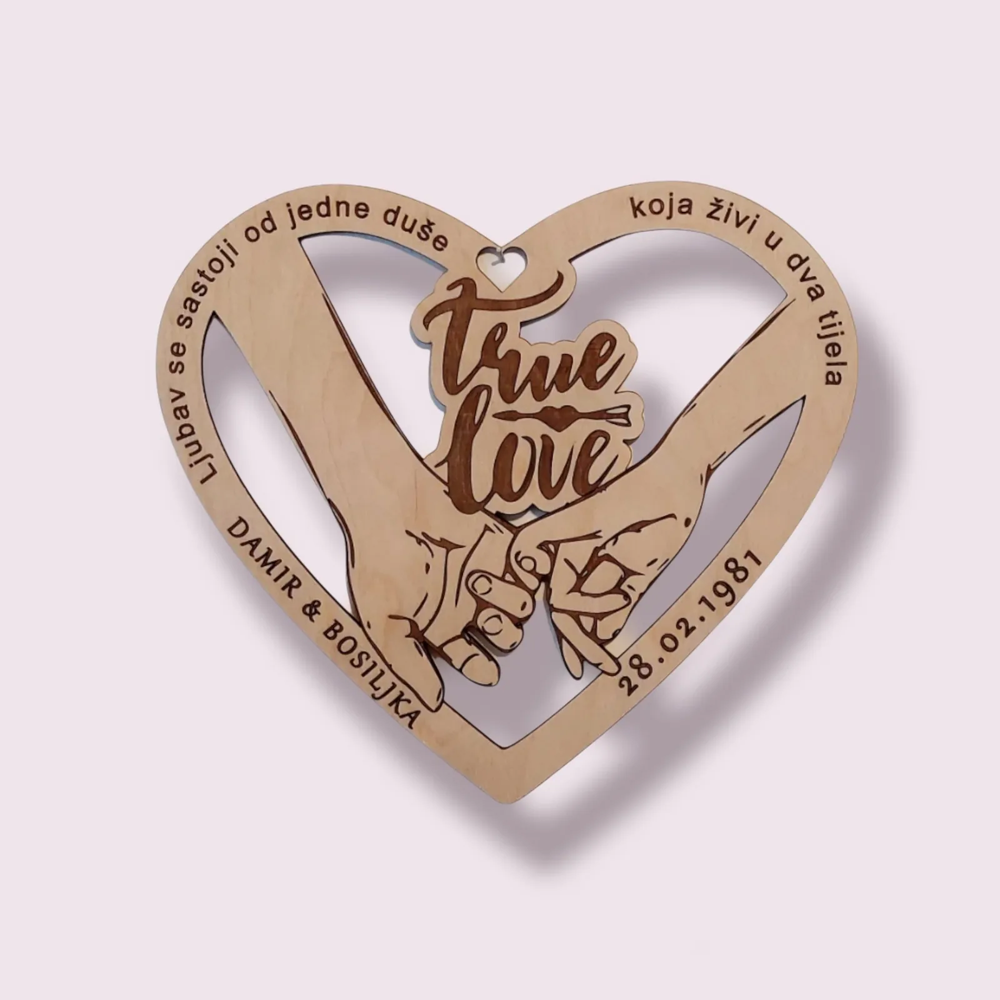

Personalizacija kao Umjetnost: Poklon Koji Priča Priču
Objavljeno: 24. listopada 2025.
U doba kada nas digitalni šum neprestano bombardira, a police trgovina pune su serijske, generičke ljepote, darivanje je postalo umjetnost izbora. Svatko može kupiti skupocjeni predmet, ali samo rijetki uspiju poklonu udahnuti – priču.
Tu leži čar personalizacije: ona ne nudi samo proizvod, već i trajno svedočanstvo pažnje. To je tiha poruka koja šapuće: "Vidio sam te, tvoje želje i tvoju jedinstvenost."
Filozofija Darivanja: Zašto je Originalnost Nova Valuta 💰
Pitanje nije što poklanjamo, već koliko sebe dajemo s tim poklonom. Generički predmeti su lako zaboravljivi, ali personalizacija stvara investiciju u sjećanje. Uloženi trud i vrijeme u osmišljavanje jedinstvene poruke daleko nadmašuju mjernu jedinicu novca. Na taj način, originalnost postaje valuta srca, a darivanje — umjetnost..
✨ Moć unikatnog otiska
Kada poklon nosi ime, datum ili internu šalu, on automatski postaje više od predmeta. Postaje podsjetnik na zajedničko iskustvo, prekretnicu ili jednostavno nečiju osobnost. Takav poklon ima *dušu* i ne završava zaboravljen u ormaru. Naš rad se oslanja na dvije glavne tehnike: Lasersko Graviranje za preciznost i Pirografiju za toplinu.

🕰️ Poklon koji prkosi prolaznosti
Lasersko graviranje i pirografija čine poruke otpornima na zaborav. Dok papirnati predmeti blijede, a digitalni fajlovi se gube, precizno urezan datum ili portret na drvetu postaje dio ostavštine. Personalizirani poklon je obećanje trajnosti u svijetu prolaznih trendova.
Od Ideje do Čiste Emocije: Kako odabrati Pravu Personalizaciju 💖
Nije svaka personalizacija jednaka. Prava magija nastaje kada se materijal i poruka spoje u savršenoj harmoniji. Evo gdje leže najbolje prilike za kreiranje neponovljivog darivanja:
- Vremenske Koordinate: Graviranje datuma vjenčanja ili rođenja na kutiju ili privjesak, s koordinatama mjesta događaja. (Fokus: *Trenutak je postao lokacija*).
- Karta Sjećanja: 3D drvena karta mjesta koje je promijenilo sve – putovanja, prvog susreta ili rodnog kraja. (Fokus: *Putovanje je materijalizirano*).
- Glas Urezan u Drvo: Umjesto teksta, graviranje audio valova "Volim te" ili prvog djetetovog glasa na predmetu. (Fokus: *Zvuk je postao dodirljiv*).
Epilog: Izbjegavanje Klišeja – Darujte Smisao, Ne Predmet 🎁
Personalizirani poklon je vaša prilika da stanete ispred police i kažete: "Ne, ovo neću kupiti. Ja ću ovo stvoriti." Koristeći preciznost laserske gravure, mi u Pyroprint Damir samo smo instrumenti vaše mašte.
Neka vaši darovi ne budu samo darovi, već mali spomenici ljubavi, zahvalnosti ili prijateljstva. Jer tek kada predmet progovori, on postaje neizbrisiva uspomena.